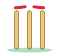

<!doctype html><html lang="en"><head><meta charset="utf-8"><meta name="viewport" content="width=device-width,initial-scale=1"><link href="https://fonts.googleapis.com/css2?family=Barlow+Condensed:wght@600;700&family=Barlow:wght@400;600&display=swap" rel="stylesheet"><link rel="stylesheet" href="style.css"><link rel="icon" href="img/ball.svg"><title>Match</title></head><body><div class="bg"></div><header class="top glass" id="top"></header><main id="m"></main><script src="/socket.io/socket.io.js"></script><script src="shared.js"></script><script src="app.js"></script><script src="charts.js"></script><script src="fx.js"></script><script>chrome('matches');const id=new URLSearchParams(location.search).get('id');
live(ms=>{const m=ms.find(x=>x.id===id);if(m&&m.toss&&m.toss.status==='flipping')FX.tossing();else FX.stopTossing();if(!m){$('#m').innerHTML='<div class="empty glass">Match not found. Go back to all matches.</div>';return}
const s=CK.summarize(m),cur=m.innings[m.innings.length-1],bat=m.status==='live'&&cur?cur.team:'',now=m.current||{};document.title=m.teamA+' v '+m.teamB;
const side=t=>{const i=s.find(x=>x.team===t);return '<div class="side '+(t===bat?'bat':'')+'">'+crest(t)+'<div class="nm">'+esc(t)+'</div><div class="big">'+(i?i.runs+'/'+i.wkts:'–')+'</div><div class="ov">'+(i?i.overs+' / '+m.overs+' ov':'Yet to bat')+'</div></div>'};
let h='<section class="glass board"><div class="meta">'+pill(m)+'<span>'+esc(m.title)+' '+m.overs+' overs each</span></div>'+whenHTML(m)+'<div class="sides">'+side(m.teamA)+'<span class="vs">v</span>'+side(m.teamB)+'</div>';
if(m.toss && m.toss.announced)h+='<div class="chase">'+esc(CK.tossText(m))+'</div>';
if(m.result)h+='<div class="chase">'+esc(m.result)+'</div>';
else if(s.length===2){const n=s[0].runs+1-s[1].runs;h+='<div class="chase">'+(n>0?esc(s[1].team)+' need '+n+' from '+(m.overs*6-s[1].balls)+' balls':esc(s[1].team)+' have reached the target')+'</div>'}
else if(!s.length)h+='<p class="empty" style="margin:0">The match has not started yet.</p>';
if(m.status==='live'&&cur&&(now.striker||now.nonStriker||now.bowler))h+='<div class="now">'+(now.striker?'<span class="bat">Striker<b>'+esc(now.striker)+'</b></span>':'')+(now.nonStriker?'<span class="bat">Non-striker<b>'+esc(now.nonStriker)+'</b></span>':'')+(now.bowler?'<span class="bowl">Bowling<b>'+esc(now.bowler)+'</b></span>':'')+'</div>';
h+='</section>';
if((m.squadA||[]).length||(m.squadB||[]).length){const battingTeam=cur&&cur.team;h+='<section class="glass pane"><h2>Squads</h2><div class="squads">'+[[m.teamA,m.squadA||[]],[m.teamB,m.squadB||[]]].map(([t,l])=>`<div class="sq"><h3>${crest(t)}${esc(t)}</h3><div class="players">${l.map(p=>{const r=m.status!=='live'||!battingTeam?'':t===battingTeam&&(p===now.striker||p===now.nonStriker)?'bat':t!==battingTeam&&p===now.bowler?'bowl':'';return `<span class="pl ${r}">${esc(p)}${r?`<em>${r==='bat'?'Batting':'Bowling'}</em>`:''}</span>`}).join('')||'<p class="meta">Squad not added yet.</p>'}</div></div>`).join('')+'</div></section>'}
h+='<section class="glass pane"><h2>Match insights</h2>'+charts(m)+'</section>';
if(cur&&cur.balls.length){const tl=CK.timeline(cur),i=s[s.length-1],last=tl[tl.length-1].ov;
 h+='<section class="glass pane"><h2>This over</h2><div class="chips">'+tl.filter(b=>b.ov===last).map(b=>'<span class="c '+CK.cls(b)+'">'+CK.chip(b)+'</span>').join('')+'</div><p class="meta" style="margin:10px 0 0">Run rate '+(i.runs/(i.balls/6||1)).toFixed(2)+'</p></section>';
 h+='<section class="glass pane"><h2>Ball by ball</h2><ul class="bb">'+tl.slice().reverse().map(b=>'<li><span class="lb">'+b.label+'</span><span class="c '+CK.cls(b)+'">'+CK.chip(b)+'</span><span>'+esc(CK.text(b))+'</span></li>').join('')+'</ul></section>'}
$('#m').innerHTML=h},(m,b,kind)=>{if(m.id===id){if(kind==='toss-start')FX.tossing();else if(kind==='toss-result')FX.toss(m);else FX.ball(b)}});</script></body></html>